listing-commission-module PASS 1.0
grade probeintent createdomain real_estatedifficulty d2ambiguity a4voice terseapps vscodebatch v11-500-s0
From the tier notes in that folder, write commission_rate(price) in a Python file beside them. Price in, rate out. Boundaries take the lower rate.
task config + evaluator
{
"config": [
{
"type": "execute",
"parameters": {
"command": "python3 -c \"import os;d='/home/user/realty';os.makedirs(d,exist_ok=True);open(os.path.join(d,'commission_tiers.txt'),'w').write('Beacon Hill Realty - listing commission tiers\\n\\nSale price under 250000 -> 0.06\\n250000 up to but not including 500000 -> 0.05\\n500000 up to but not including 1000000 -> 0.04\\n1000000 and above -> 0.025\\n\\nThe boundary price always takes the lower rate of the two tiers it touches.\\n')\"",
"shell": true
}
},
{
"type": "launch",
"parameters": {
"command": [
"code",
"/home/user/realty/commission_tiers.txt"
]
}
}
],
"evaluator": {
"func": "check_include_exclude",
"result": {
"type": "vm_command_line",
"command": [
"python3",
"-c",
"import sys, traceback\ndef _main():\n import sys, os, glob, importlib.util\n cases = [(180000, 0.06), (249999.99, 0.06), (250000, 0.05), (499999, 0.05), (500000, 0.04), (999999, 0.04), (1000000, 0.025), (2400000, 0.025)]\n problem = None\n fn = None\n for path in sorted(glob.glob(\"/home/user/realty/*.py\")):\n try:\n spec = importlib.util.spec_from_file_location(\"m_\" + os.path.basename(path)[:-3], path)\n m = importlib.util.module_from_spec(spec)\n spec.loader.exec_module(m)\n except Exception as e:\n print(\"%s failed to import: %s\" % (path, e), file=sys.stderr)\n continue\n f = getattr(m, \"commission_rate\", None)\n if callable(f):\n fn = f\n break\n if fn is None:\n problem = \"no python file in /home/user/realty defines commission_rate\"\n else:\n for price, want in cases:\n try:\n got = float(fn(price))\n except Exception as e:\n problem = \"commission_rate(%s) raised %s\" % (price, e)\n break\n if abs(got - want) > 1e-9:\n problem = \"commission_rate(%s) = %s, expected %s\" % (price, got, want)\n break\n if problem:\n print(problem, file=sys.stderr)\n print(\"FAIL\" if problem else \"PASS\")\n\ntry:\n _main()\nexcept Exception:\n traceback.print_exc(file=sys.stderr)\n print(\"FAIL\")\n"
]
},
"expected": {
"type": "rule",
"rules": {
"include": [
"PASS"
],
"exclude": [
"FAIL"
]
}
}
}
}
step 1 04:13:24
THINKINGThe task: create a Python file `commission_rate(price)` in the `~/realty` folder (beside commission_tiers.txt). From the tiers:
- under 250000 -> 0.06
- 250000 up to but not including 500000 -> 0.05
- 500000 up to but not including 1000000 -> 0.04
- 1000000 and above -> 0.025
- Boundary price takes the lower rate of the two tiers it touches.
Boundaries: at 250000, it's the lower of 0.06 and 0.05 = 0.05 (the "up to but not including 500000" tier includes 250000). At 500000, lower of 0.05 and 0.04 = 0.04 (tier 3 includes 500000). At 1000000, tier 4 includes 1000000 -> 0.025.
So the logic:
- if price < 250000: 0.06
- elif price < 500000: 0.05
- elif price < 1000000: 0.04
- else: 0.025
This naturally handles boundaries taking the lower rate. Let me open a terminal in VS Code to create the file. I'll use the integrated terminal.
Let me first take a screenshot to confirm state, then open terminal via Terminal menu. Actually I can just use Terminal > New Terminal. Let me open the terminal and write the file.
ACTIONI'll create the Python file beside the tier notes. Let me open a terminal in VS Code.
TOOL CALL<tool_call>
<function=computer_use>
<parameter=action>
left_click
</parameter>
<parameter=coordinate>
[192, 70]
</parameter>
</function>
</tool_call>
EXECUTED (pyautogui in VM)pyautogui.click(369, 75)
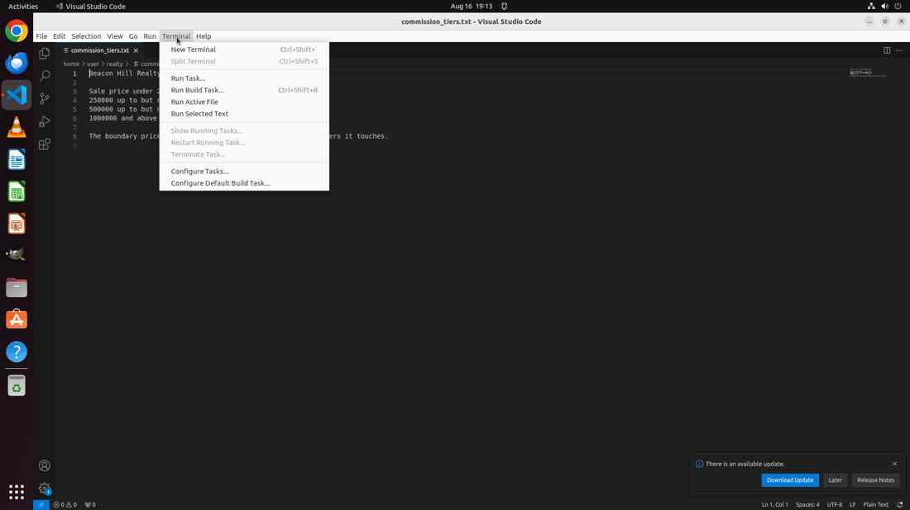
step 2 04:13:29
THINKINGThe Terminal menu is open. Click "New Terminal".
TOOL CALL<tool_call>
<function=computer_use>
<parameter=action>
left_click
</parameter>
<parameter=coordinate>
[211, 95]
</parameter>
</function>
</tool_call>
EXECUTED (pyautogui in VM)pyautogui.click(405, 102)
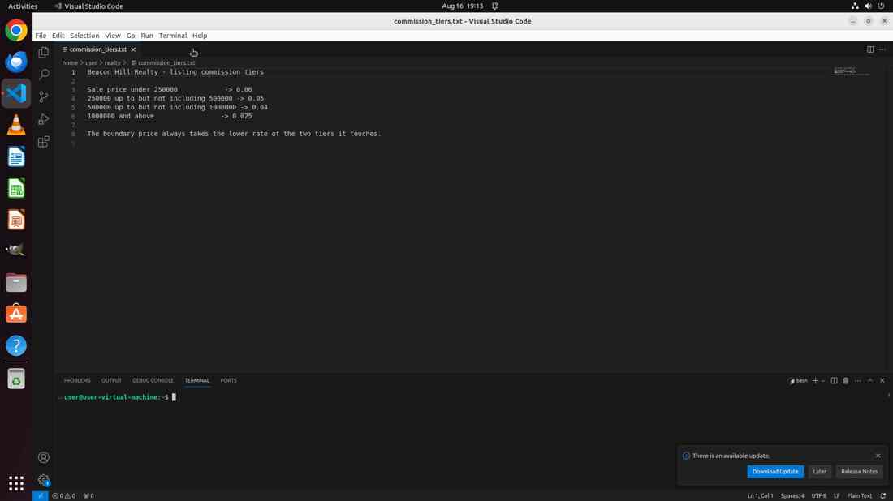
step 3 04:13:37
THINKINGThe terminal is open in ~/ (home). The folder is ~/realty. I'll write the Python file using a heredoc. Let me write the file to ~/realty/commission.py. I'll use cat with a heredoc so indentation is preserved.
The logic:
- price < 250000: 0.06
- price < 500000: 0.05
- price < 1000000: 0.04
- else: 0.025
Boundaries take the lower rate, which is naturally handled since each tier includes its lower bound (e.g., price==250000 falls in the 0.05 tier, the lower of 0.06/0.05).
ACTIONThe terminal is ready. I'll create the Python file in the `~/realty` folder using a heredoc.
TOOL CALL<tool_call>
<function=computer_use>
<parameter=action>
left_click
</parameter>
<parameter=coordinate>
[468, 791]
</parameter>
</function>
</tool_call>
EXECUTED (pyautogui in VM)pyautogui.click(899, 855)
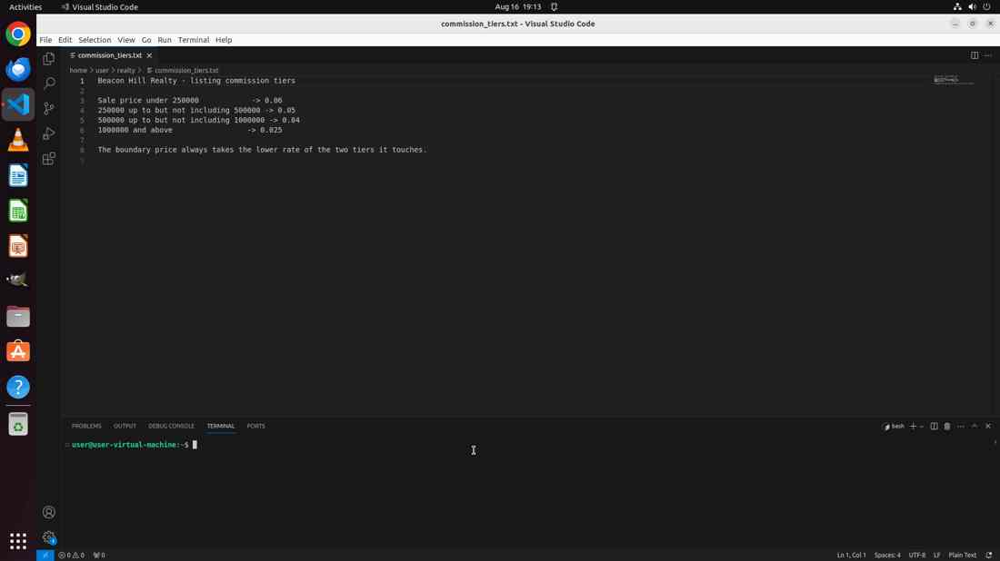
step 4.1 04:13:46
THINKINGI'll type the heredoc command. Using a quoted heredoc delimiter ('PYEOF') to avoid variable expansion issues. The indentation with 4 spaces will be preserved.
TOOL CALL<tool_call>
<function=computer_use>
<parameter=action>
type
</parameter>
<parameter=text>
cat > ~/realty/commission.py << 'PYEOF'
def commission_rate(price):
"""Return the listing commission rate for a given sale price.
Tiers (from commission_tiers.txt):
under 250000 -> 0.06
250000 .. < 500000 -> 0.05
500000 .. < 1000000 -> 0.04
1000000 and above -> 0.025
A boundary price takes the lower rate of the two tiers it touches.
"""
if price < 250000:
return 0.06
if price < 500000:
return 0.05
if price < 1000000:
return 0.04
return 0.025
PYEOF
</parameter>
</function>
</tool_call>
EXECUTED (pyautogui in VM)pyautogui.typewrite("cat > ~/realty/commission.py << 'PYEOF'")
step 4.2 04:13:50
EXECUTED (pyautogui in VM)pyautogui.press("enter")
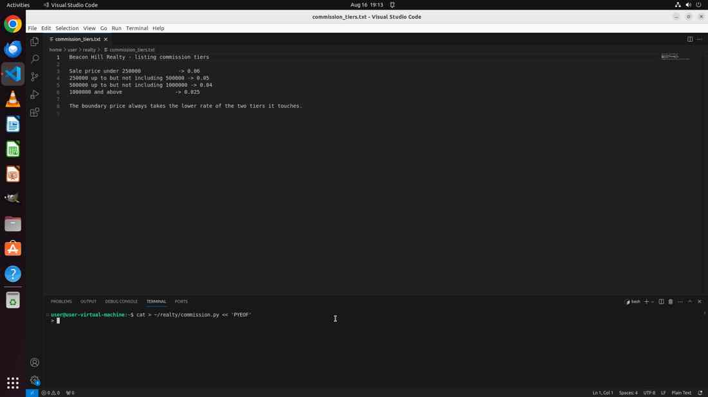
step 4.3 04:13:53
EXECUTED (pyautogui in VM)pyautogui.typewrite("def commission_rate(price):")
step 4.4 04:13:56
EXECUTED (pyautogui in VM)pyautogui.press("enter")
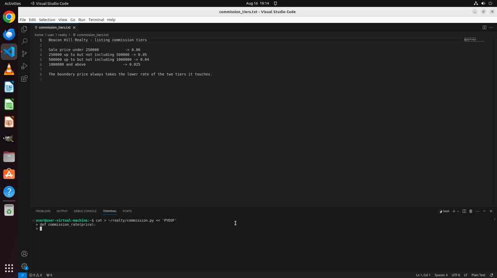
step 4.5 04:14:00
EXECUTED (pyautogui in VM)pyautogui.typewrite(" \"\"\"Return the listing commission rate for a given sale price.")
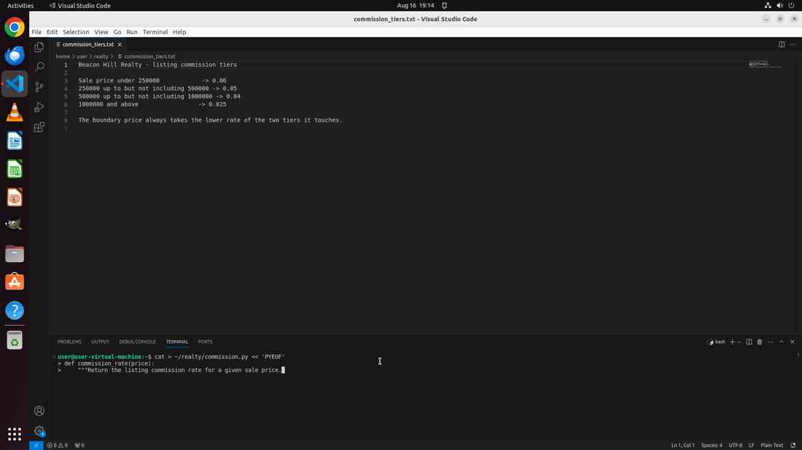
step 4.6 04:14:03
EXECUTED (pyautogui in VM)pyautogui.press("enter")
step 4.7 04:14:06
EXECUTED (pyautogui in VM)pyautogui.press("enter")
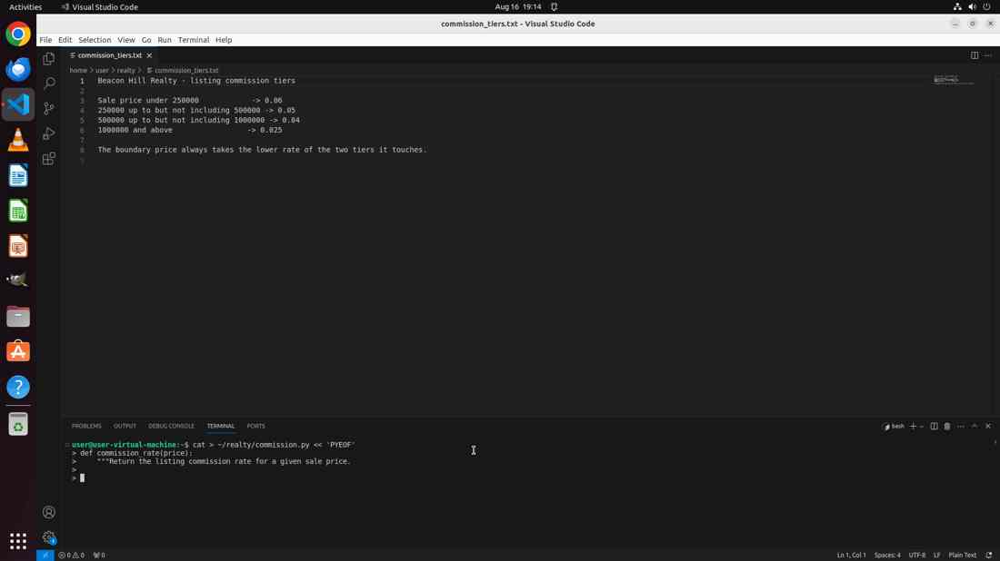
step 4.8 04:14:10
EXECUTED (pyautogui in VM)pyautogui.typewrite(" Tiers (from commission_tiers.txt):")
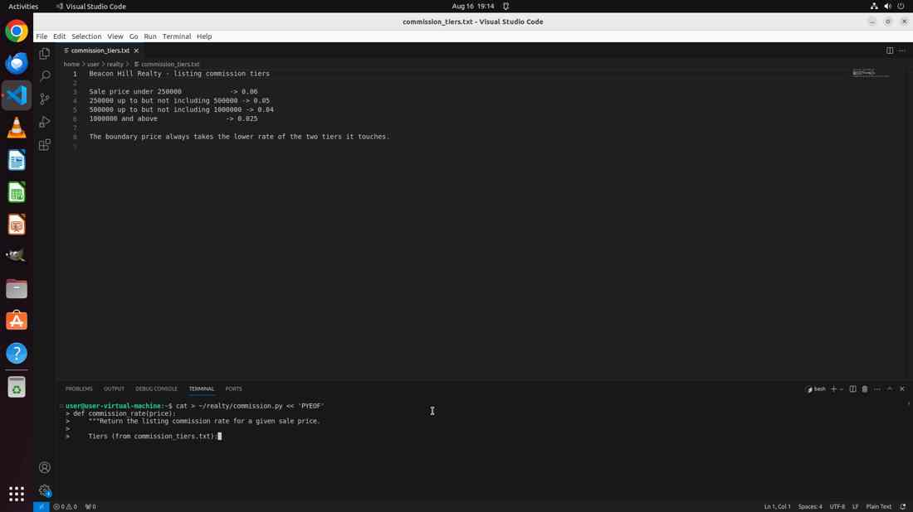
step 4.9 04:14:13
EXECUTED (pyautogui in VM)pyautogui.press("enter")
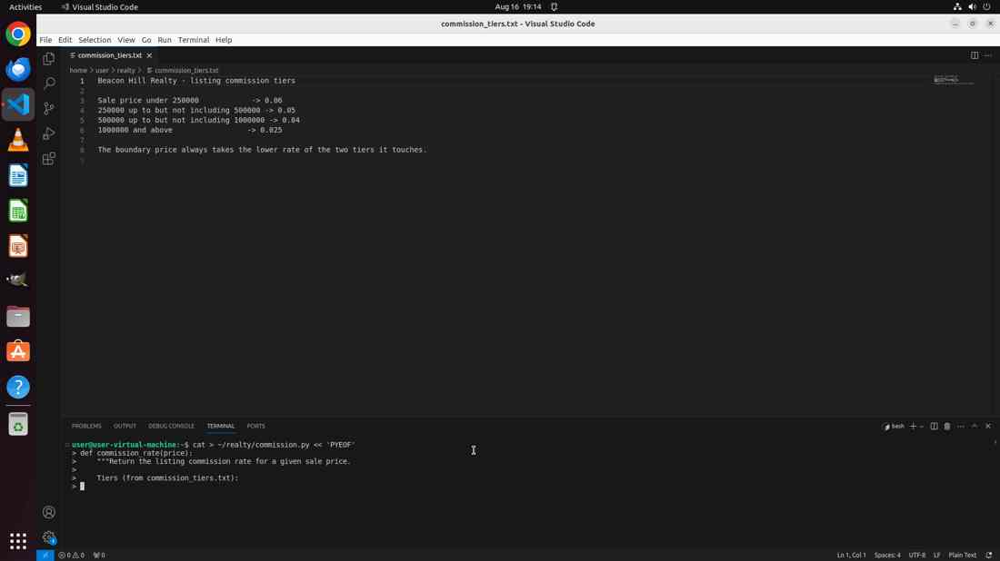
step 4.10 04:14:17
EXECUTED (pyautogui in VM)pyautogui.typewrite(" under 250000 -> 0.06")
step 4.11 04:14:20
EXECUTED (pyautogui in VM)pyautogui.press("enter")
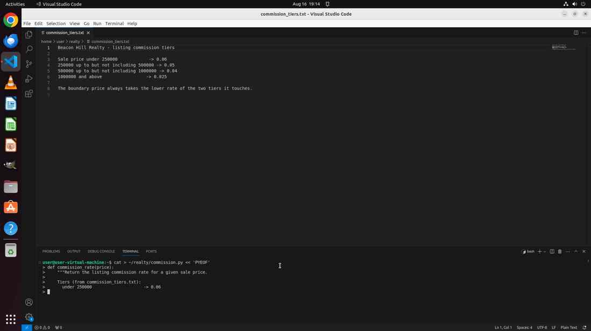
step 4.12 04:14:23
EXECUTED (pyautogui in VM)pyautogui.typewrite(" 250000 .. < 500000 -> 0.05")
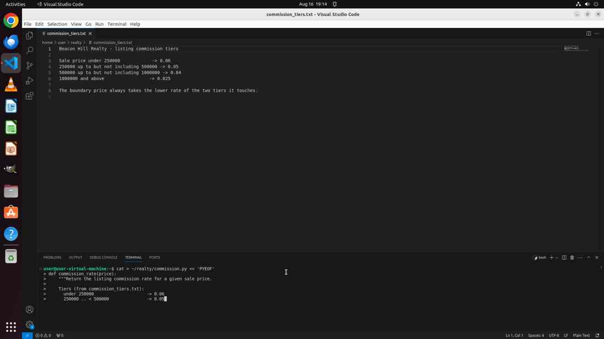
step 4.13 04:14:27
EXECUTED (pyautogui in VM)pyautogui.press("enter")
step 4.14 04:14:30
EXECUTED (pyautogui in VM)pyautogui.typewrite(" 500000 .. < 1000000 -> 0.04")
step 4.15 04:14:34
EXECUTED (pyautogui in VM)pyautogui.press("enter")
step 4.16 04:14:37
EXECUTED (pyautogui in VM)pyautogui.typewrite(" 1000000 and above -> 0.025")
step 4.17 04:14:40
EXECUTED (pyautogui in VM)pyautogui.press("enter")
step 4.18 04:14:44
EXECUTED (pyautogui in VM)pyautogui.press("enter")
step 4.19 04:14:47
EXECUTED (pyautogui in VM)pyautogui.typewrite(" A boundary price takes the lower rate of the two tiers it touches.")
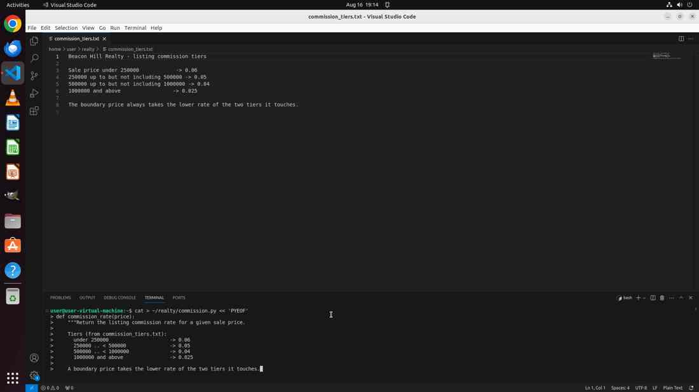
step 4.20 04:14:50
EXECUTED (pyautogui in VM)pyautogui.press("enter")
step 4.21 04:14:54
EXECUTED (pyautogui in VM)pyautogui.typewrite(" \"\"\"")
step 4.22 04:14:57
EXECUTED (pyautogui in VM)pyautogui.press("enter")
step 4.23 04:15:00
EXECUTED (pyautogui in VM)pyautogui.typewrite(" if price < 250000:")
step 4.24 04:15:03
EXECUTED (pyautogui in VM)pyautogui.press("enter")
step 4.25 04:15:07
EXECUTED (pyautogui in VM)pyautogui.typewrite(" return 0.06")
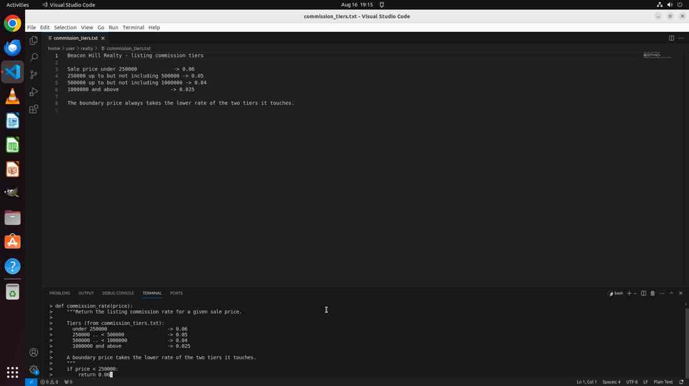
step 4.26 04:15:10
EXECUTED (pyautogui in VM)pyautogui.press("enter")
step 4.27 04:15:13
EXECUTED (pyautogui in VM)pyautogui.typewrite(" if price < 500000:")
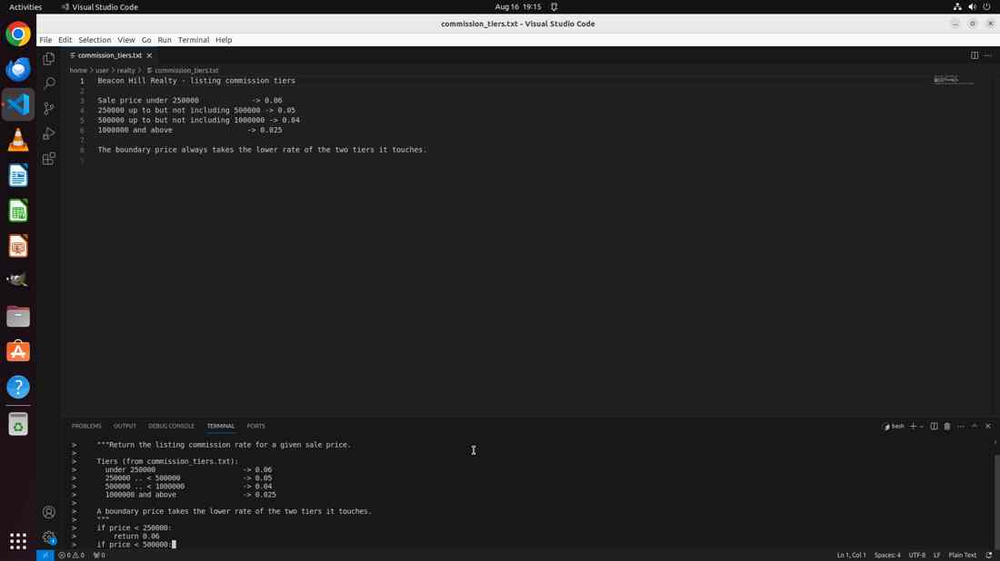
step 4.28 04:15:17
EXECUTED (pyautogui in VM)pyautogui.press("enter")
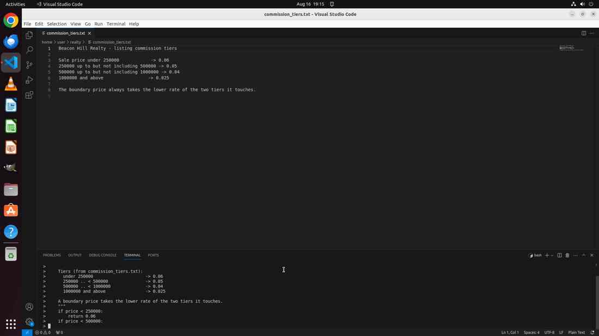
step 4.29 04:15:20
EXECUTED (pyautogui in VM)pyautogui.typewrite(" return 0.05")
step 4.30 04:15:23
EXECUTED (pyautogui in VM)pyautogui.press("enter")
step 4.31 04:15:26
EXECUTED (pyautogui in VM)pyautogui.typewrite(" if price < 1000000:")
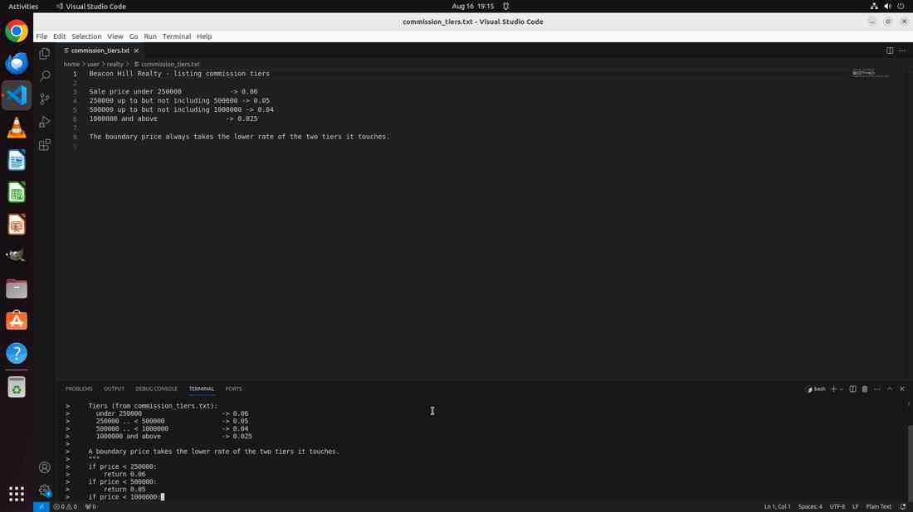
step 4.32 04:15:30
EXECUTED (pyautogui in VM)pyautogui.press("enter")
step 4.33 04:15:33
EXECUTED (pyautogui in VM)pyautogui.typewrite(" return 0.04")
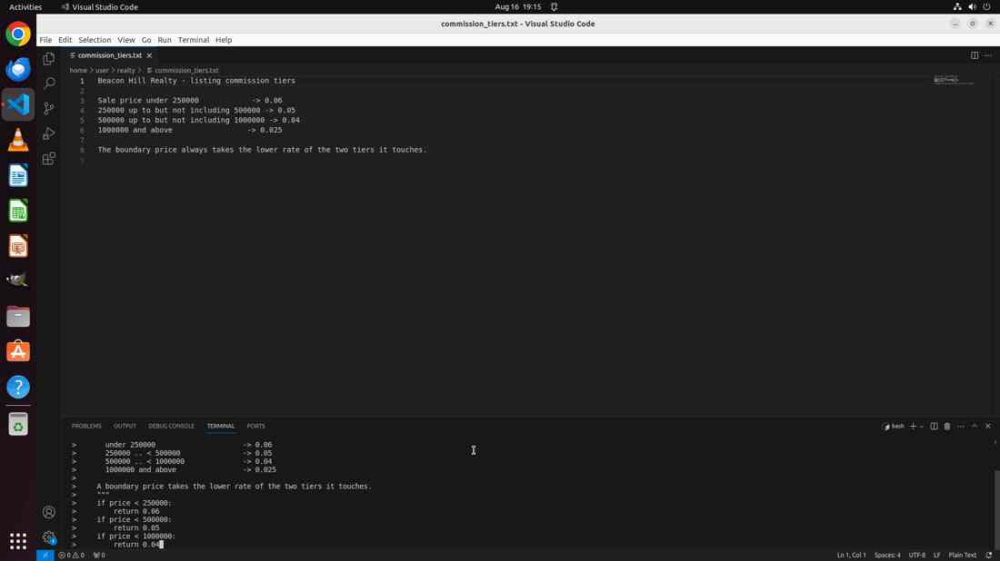
step 4.34 04:15:36
EXECUTED (pyautogui in VM)pyautogui.press("enter")
step 4.35 04:15:40
EXECUTED (pyautogui in VM)pyautogui.typewrite(" return 0.025")
step 4.36 04:15:43
EXECUTED (pyautogui in VM)pyautogui.press("enter")
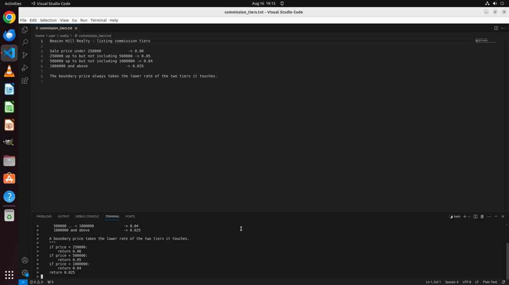
step 4.37 04:15:46
EXECUTED (pyautogui in VM)pyautogui.typewrite("PYEOF")
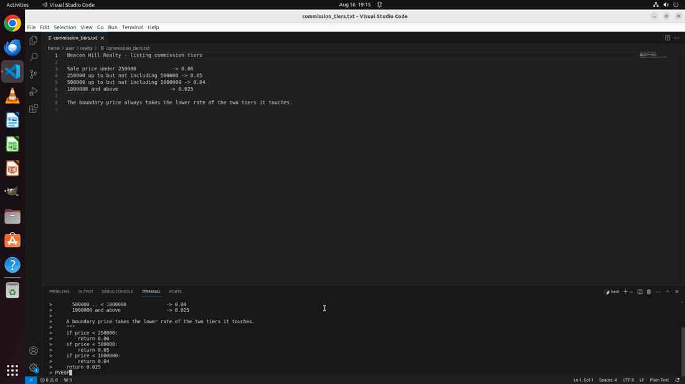
step 5 04:15:53
THINKINGThe heredoc content was typed. The last line shows "> PYEOF" which means the closing delimiter was typed but I need to press Enter to complete the heredoc. Actually the type text ended with a newline after PYEOF, so it should have submitted. Let me press Enter to be safe and then verify the file.
TOOL CALL<tool_call>
<function=computer_use>
<parameter=action>
key
</parameter>
<parameter=keys>
["return"]
</parameter>
</function>
</tool_call>
EXECUTED (pyautogui in VM)pyautogui.press("return")
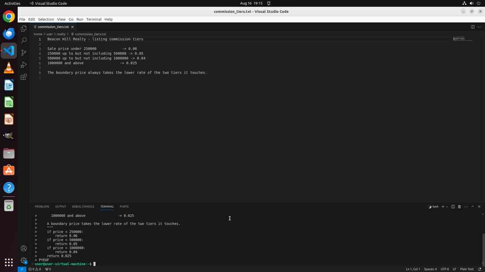
step 6 04:16:01
THINKINGThe heredoc completed and returned to the prompt. Now let me verify the file and test the boundary logic. I'll run a quick python test to confirm boundaries return the lower rate: 250000 -> 0.05, 500000 -> 0.04, 1000000 -> 0.025, plus interior points.
ACTIONThe file was written. Let me verify its contents and test the boundary behavior.
TOOL CALL<tool_call>
<function=computer_use>
<parameter=action>
type
</parameter>
<parameter=text>
cd ~/realty && python3 -c "import commission as c; [print(p, c.commission_rate(p)) for p in (100000,249999,250000,499999,500000,999999,1000000,2000000)]"
</parameter>
</function>
</tool_call>
EXECUTED (pyautogui in VM)pyautogui.typewrite("cd ~/realty && python3 -c \"import commission as c; [print(p, c.commission_rate(p)) for p in (100000,249999,250000,499999,500000,999999,1000000,2000000)]\"")
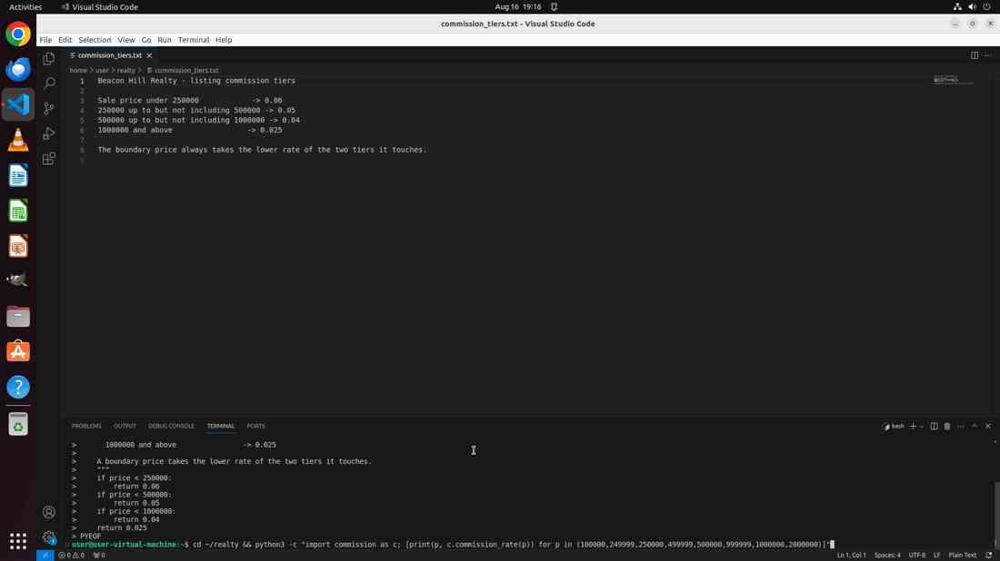
step 7 04:16:08
THINKINGThe command is typed but not yet executed. Press Enter.
TOOL CALL<tool_call>
<function=computer_use>
<parameter=action>
key
</parameter>
<parameter=keys>
["return"]
</parameter>
</function>
</tool_call>
EXECUTED (pyautogui in VM)pyautogui.press("return")

step 8 04:16:20
THINKINGOutput:
100000 -> 0.06
249999 -> 0.06
250000 -> 0.05 (boundary, lower of 0.06/0.05) ✓
499999 -> 0.05
500000 -> 0.04 (boundary, lower of 0.05/0.04) ✓
999999 -> 0.04
1000000 -> 0.025 (boundary, lower of 0.04/0.025) ✓
2000000 -> 0.025
All correct. The file is created beside the tier notes. Task complete.
ACTIONThe file is created and verified. I wrote `~/realty/commission.py` (right beside `commission_tiers.txt`) defining `commission_rate(price)`.
The tier logic:
- `price < 250000` → `0.06`
- `price < 500000` → `0.05`
- `price < 1000000` → `0.04`
- otherwise → `0.025`
Because each tier is anchored on its lower bound, a boundary price automatically resolves to the *lower* of the two rates it touches. The test run confirms this:
- 249999 → 0.06, **250000 → 0.05**
- 499999 → 0.05, **500000 → 0.04**
- 999999 → 0.04, **1000000 → 0.025**
All boundaries correctly take the lower rate, and interior points return their tier's rate.
EXECUTED (pyautogui in VM)DONE
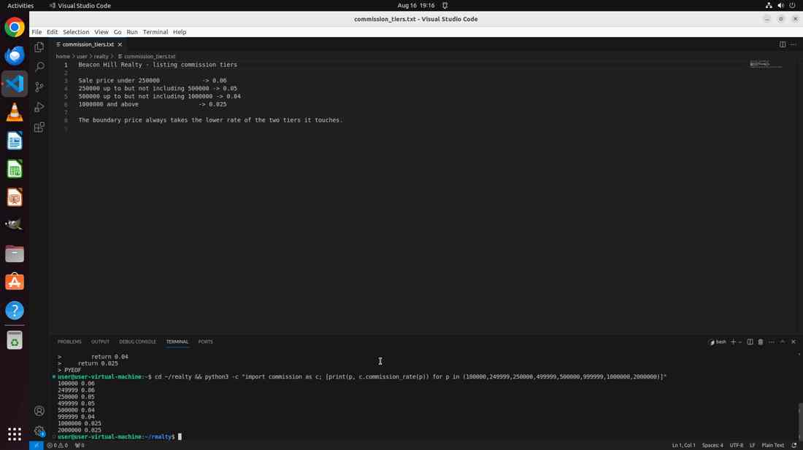